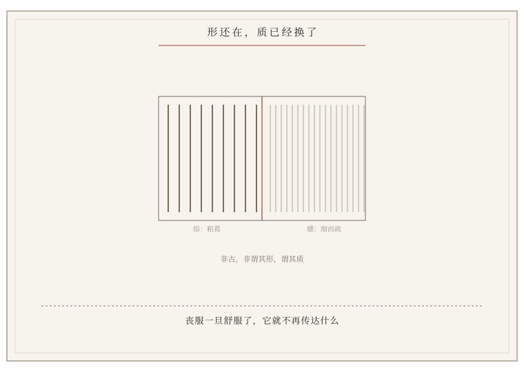

檀弓上 · 三·八十四 · 第 287 课
縣子曰：「綌衰、繐裳，非古也。」
说什么事：县子说：用粗葛做衰、用细疏的布做裳，这不是古制。
落在哪一层：丧服之质。论「丧服一旦变轻变凉，就失去了它的功能」。
为何编在此位：上节论奠之方位，此节论服之质料。一论位置之失，一论质料之失，皆属「末失」。
【经】縣子曰：「綌衰、繐裳，非古也。」
【注】非時尚輕涼慢禮。
【疏】此以下论县子非当时人尚轻凉慢礼之事。绤，葛也；繐，布疏者，汉时南阳邓县能作之。当记时失礼，多尚轻细，故有丧者不服粗衰，但疏葛为衰、繐布为裳，故云「非古」也。「古」谓周初制礼时也。
绤 粗葛布。注「绤，葛也」，疏「粗葛也」。细葛曰絺，粗葛曰绤。
衰 丧服的上衣，当胸有衰（缀于胸前之布，故名）。此处指丧服之上。
繐 细而疏的布。疏「布细而疏曰繐」。
裳 下服。
非古 不合古制。古，谓周初制礼之时。
轻凉 轻而凉。注「非时尚轻凉慢礼」——轻凉指衣料薄、透气。
县子说：用粗葛做衰、用细疏的布做裳，这不是古制。
此节只有一句，是《檀弓》里论丧服质料最直的一处。
丧服的正制，上衣用最粗的麻（斩衰用生麻，齐衰用粗麻），裳也用粗布。它的功能是「以示哀」：用最不舒服的材料，把心里那件不舒服的事穿在身上。
当时人改用了葛和繐——葛比麻细软，繐是细而疏的布（疏还注明，到汉代南阳邓县还能织这种布）。这样做的丧服穿着舒服，看着也清爽。
县子一句「非古」，注一句「非时尚轻凉慢礼」，把话说尽了：这不是复古之争，是功能之争。丧服一旦变得舒服，它就不再传达什么。
第一层 丧服的物质逻辑 丧服之所以用麻，不是因为麻更好看或更便宜，是因为麻粗、硬、扎人。穿在身上不舒服，人才记得自己在丧中。这是礼把「心」落到「身」上的一种办法：心里的事容易忘，身上的事忘不了。
第二层 材质一变，礼就空了 把麻换成葛，把粗布换成繐，从制式上看，衰还是衰、裳还是裳，形状没变；从功能上看，已经空了。礼的形可以留，质一换，意思就走了。此节的锐处正在这里：它不指责谁违礼，只说「非古」——你已经不是那件东西了。
第三层 「轻凉」二字何以是「慢礼」 注把两个词连起来：轻凉是手段，慢礼是后果。舒服的丧服让人在丧中也能过得舒服，于是丧就成了一段穿特定衣服的时间，而不是一段生活被改变的时间。
第四层 这一节为何这么短 县子只说了七个字，没有说该怎么做。因为该怎么做礼书里都有：麻、斩、齐、缌，各有等。他只需指出「这个不是那个」，剩下的自有文在。
与今日何干 今人的「礼」多在形式上保留而质料上偷换：追悼会办得体面、衣着得体、流程顺畅，一切都在，唯独那件让人不舒服的部分被去掉了。此节问的正是这一句：你把麻换成了葛，还叫它丧服吗。
| 左 | 右 |
|---|---|
| 绤衰 | 粗葛为上衣 |
| 繐裳 | 细疏布为下服 |
| 非古也 | 不合周初之制 |
| 时尚轻凉 | 风气 |
| 慢礼 | 后果 |
| 麻 | 粗硬，穿在身上 |
| 葛与繐 | 细软，穿着舒服 |
| 形存而质换 | 礼遂空 |
画一间织室，视点平。织机上一幅正在织的布：左半幅粗麻（纤维粗硬、边缘散着麻缕），右半幅细葛（纹理细密、布面平滑），两幅在同一条经线上，中间没有界线。机旁木架上挂着一件已经做成的丧服上衣（形制端正，但布料平滑），衣下摆垂着。一位老者（深衣、侧身、手抚那件上衣的下摆）。不写文字、不画人面细节。赭色只用在粗麻那半幅散出的麻缕，与丧服下摆的一处褶痕。
